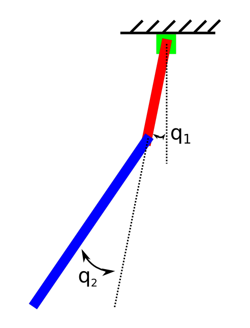

Summary. This report looks into implementing a multimodal feedback controller for the classic acrobot [1]. The acrobot is a simple two-linked robot with two joints and control about the second joint, called the elbow (see Figure 1). The proposed controller is shown to stabilize the acrobot at the upright equilibrium, which is unstable. The focus then shifts to finding an optimal policies for catching a ball both when the initial conditions are known and perturbed.
Figure 1: The (in)famous acrobot.

Mathematical problem
Implementation
Results
References
We address the feedback control problem for the acrobot. For a complete discussion of the dynamics of the acrobot, see Sprong [1]. The acrobot is a wonderful demonstrative system since it exhibits rich nonlinear behavior but is still simple enough to describe mathematically. To stabilize about the upright equilibrium, three controllers will be used: LQR, partial feedback linearization, and energy-shaping.
The LQR feedback controller will be discussed first. This controller's region of utility is only near where the acrobot dynamics are well-described by the linearized dynamics: $$ \begin{align} \begin{pmatrix} q \\ \dot q \end{pmatrix} \approx A \begin{pmatrix} q-q_0 \\ \dot q \end{pmatrix} + B u, \label{lqr} \end{align} $$
where \( q \), \( q_0 \), \( A \), and \( B \) are the two angular states, the desired angular state, A is the Jacobian matrix, and \( B \) is the control Jacobian. From this information, and through choice of appropriate symmetric positive definite matrices \( Q \) and \( R \), an LQR feedback controller that stabilizes the acrobot at the upright equilibrium when "sufficiently" close to the equilibrium. Far enough away from the equilibrium, the LQR controller will not work. This controller consists of a gain matrix, \( K \), and a cost-to-go matrix, \( S \). The cost-to-go matrix determines when to switch the acrobot to using the LQR controller exclusively. The LQR control law is: $$ \begin{align} u &= -K \begin{pmatrix} q - q_0 \\ \dot q \end{pmatrix}. \label{lqr_cntrl} \end{align} $$
The second controller is the partial feedback linearization controller and it is valid away from the equilibrium. We start with the acrobot manipulator equations [2] written in a simplified form: $$ \begin{align} \ddot q &= H^{-1}(Bu-C), \label{manip}\\ B &= \begin{pmatrix} 0 \\ 1 \end{pmatrix}, \ C = \begin{pmatrix} C_1 \\ C_2 \end{pmatrix}, \ H^{-1} = \begin{pmatrix} a_1 & a_2 \\ a_2 & a_3 \end{pmatrix}. \end{align} $$
The goal for collocated PFL is to find a control law \( u \) such that \( \ddot q = y \) for some value \( y \). This law works out to be: $$ \begin{align} u = \frac{1}{a_3}(y + a_2 C_1) + C_2. \label{pfl} \end{align} $$
The final controller is energy-shaping, and it is valid away from the upright equilibrium. The total energy of the acrobot is the sum of the potential, \( V \), and kinetic, \( T \), energies: \( E = T+V \). We seek a configuration that zeros out the change in energy; this means we've reached the quilibrium. The resulting control law is: $$ \begin{align} u = k (E_0-E) \dot q_2, \label{energy} \end{align} $$
where \( E_0 \) and \( E \) are the energy at the upright state and at the current state, respectively.
The next part of the project is concerned with the generation of optimal trajectories using piecewise polynomials. Polynomials of the form: $$ \begin{align} x_i(t) = x_i(t_i) + a_1 x_i(t-t_i) + a_2 x_i^2(t-t_i) + a_3 x_i^3(t-t_i) + \ldots , \label{poly} \end{align} $$
where \( t_i \) is the \( i^{\text{th}} \) knot point in time. The idea behind piecewise polynomial trajectory generation is to find a sequence of polynomials that agree with the dynamics of the acrobot up to some arbitrary derivative; a technique known as direct collocation [2]. This allows the generation of complex trajectories using relatively simple mathematics.
These methods generate an open loop optimal trajectory when the initial condition is known. When the initial condition is perturbed, an LQR controller, which tracks error over time, must be implemented to track the optimal trajectory. Additionally, since we are predominately concerned with the final state, where the ball is either caught or now, we need to add a final state constraint to the LQR controller.
The implementation is built on the Drake API (see Drake GitHub page). The Drake package is available freely, but some of the third-party software requires additional licensing. The Drake repo must be build locally before you can expect any of the below code to work.
The implementation of the full feedback controller is shown below:
function u = output(obj,t,~,x)
q = x(1:2);
qd = x(3:4);
% unwrap angles q(1) to [0,2pi] and q(2) to [-pi,pi]
q(1) = q(1) - 2*pi*floor(q(1)/(2*pi));
q(2) = q(2) - 2*pi*floor((q(2) + pi)/(2*pi));
%%%% put your controller here %%%%
% You might find some of the following functions useful
% user definitions (for first part of problem, set k2=k3=0)
% k1 = 6 shows that energy-shaping control leads to nearly constant
% energy when looking at position relative to lower (stable)
% equilibrium
k1 = 6; % energy-shaping gain
k2 = 6; % partial feedback linearization position gain
k3 = 6; % partial feedback linearization rate gain
tol = 500; % cost threshold for switching to LQR feedback controller
firstPart = 0; % set to 1 when looking at energy-shaping only controller, otherwise set 0 (false)
% error vector
if firstPart
e = [q;qd] - zeros(4,1); % for first part of problem (stable equilibrium)
else
e = [q;qd]-[pi;0;0;0]; % for second part of problem (unstable
% equilibrium)
end
% get dynamics parameters
[H,C,B] = obj.p.manipulatorDynamics(q,qd);
[f,df] = obj.p.dynamics(t,[pi;0;0;0],0);
% construct LQR
Alin = df(:,2:5);
Blin = df(:,6);
Q = .5*diag([1 1 1 1]);
R = .5;
[K,S] = lqr(Alin,Blin,Q,R);
% energy-shaping piece
com_position = obj.p.getCOM(q); % center-of-mass position
mass = obj.p.getMass();
gravity = obj.p.gravity;
% Recall that the kinetic energy for a manipulator given by .5*qd'*H*qd
T = 1/2*qd'*H*qd;
U = -mass*gravity(3)*com_position(2);
E = T+U;
com_position_d = obj.p.getCOM([pi;0]);
Ed = -mass*gravity(3)*com_position_d(2);
ue = k1*(Ed - E)*qd(2);
% partial feedback linearization piece
Hinv = pinv(H);
a2 = Hinv(1,2); % =H(2,1)
a3 = Hinv(2,2);
y = -k2*q(2)-k3*qd(2);
up = (y+a2*C(1))/a3 + C(2);
% if the cost (e'*S*e) is smaller than some tolerance for
% the first time, set the closer flag so that the control input
% should be from LQR
if (e'*S*e < tol && ~obj.closer && ~firstPart)
obj.closer = 1;
end
% if we haven't gotten to within the linearization regime,
% our control input should be the sum of partial feedback
% linearization and energy-shaping inputs
if (~obj.closer)
u = up+ue;
% otherwise, if we are in a region where the linearization
% is valid, use LQR gain applied to error vector
else
u = -K*e;
end
%%%% end of your controller %%%%
% leave this line below, it limits the control input to [-20,20]
u = max(min(u,20),-20);
% This is the end of the function
end
The implementation of the trajectory optimization for catching the ball is:
function [p,xtraj,utraj,v,x0] = pset5_catch
p = PlanarRigidBodyManipulator('Acrobot.urdf');
p = p.addRobotFromURDF('../../systems/plants/test/ball.urdf',zeros(3,1),zeros(3,1),struct('floating',true));
p = p.setInputLimits(-40,40);
N = 31;
T = 3;
x0 = [0;0;-10;3*5-2-4.5*9.81;0;0;0;3;3*9.81-5;0];
t_init = linspace(0,T,N);
% ********YOUR CODE HERE ********
% Set the initial guess for x and u, should be dim(x) by N and dim(u) by N
% respectively
x_init_vec = rand(length(x0),N);
u_init_vec = rand(1,N);
% *******************************
traj_init.x = PPTrajectory(foh(t_init,x_init_vec));
traj_init.u = PPTrajectory(foh(t_init,u_init_vec));
traj_init.x = traj_init.x.setOutputFrame(p.getStateFrame);
traj_init.u = traj_init.u.setOutputFrame(p.getInputFrame);
traj_opt = DircolTrajectoryOptimization(p,N,[T/2 T]);
% FOR THE SECOND PART, YOU MIGHT WANT THIS LINE
%traj_opt = traj_opt.addFinalCost(@(tt,x) final_state_obj(p,tt,x));
traj_opt = traj_opt.addRunningCost(@running_cost_fun);
traj_opt = traj_opt.addStateConstraint(ConstantConstraint(x0),1);
traj_opt = traj_opt.setSolver('fmincon');
traj_opt = traj_opt.setSolverOptions('fmincon','Algorithm','sqp');
catchConstraint = FunctionHandleConstraint([0;0],[0;0],10,@(x) final_state_con(p,x),1);
traj_opt = traj_opt.addStateConstraint(catchConstraint,N);
tic
[xtraj,utraj,z,F,info] = traj_opt.solveTraj(t_init,traj_init);
toc
v = p.constructVisualizer;
v.axis = [-5 5 -5 5];
v.playback(xtraj)
v.drawWrapper(3,xtraj.eval(3))
v.draw_axes = 1;
%playbackMovie(v,xtraj,'first_catch.avi');
xf = xtraj.eval(3);
[~,dcon] = final_state_con(p,xf);
end
function [f,df] = running_cost_fun(h,x,u)
f = u^2;
df = [0 zeros(1,10) 2*u];
end
function [f,df] = final_state_con(obj,x)
q = x(1:5);
qd = x(6:10);
kinsol = obj.doKinematics(q);
% body index, so p.body(3) is the lower link
hand_body = 3;
% position of the "hand" on the lower link, 2.1m is the length
pos_on_hand_body = [0;-2.1];
% Calculate position of the hand in world coordinates
% the gradient, dHand_pos, is the derivative w.r.t. q
[hand_pos,dHand_pos] = obj.forwardKin(kinsol,hand_body,pos_on_hand_body);
% ********YOUR CODE HERE ********
% Calculate f and the gradient df/dx
% f should be [0;0] if and only if the hand_pos calculated above equals
% the current position of the ball
% DO NOT simply pre-calculate the position of the ball at t=3
% the final time of the trajectory might not be 3!
f = [x(3)-hand_pos(1);x(4)-hand_pos(2)];
df_b = [0 0 1 0 0;0 0 0 1 0];
df = [df_b-dHand_pos, zeros(2,length(q))];
% *******************************
end
function [f,df] = final_state_obj(obj,T,x)
% ********YOUR CODE HERE ********
% For the second part, calculate a cost that rewards a catch point higher
% in the air. There are lots of ways to do this, for this problem.
% the derivative df = [df/dT df/dx]
% where T is the final time.
% Some solutions will use T, others may not.
f = 100^2*T; % try to minimize time
df = zeros(length(f),11);
df(1) = 100^2;
% *******************************
end
When the initial condition that generated the optimal trajectory has been perturbed, and additional LQR controller needs to be implemented
% RUN THIS to generate your solution
megaclear
[p,xtraj,utraj,v,x0] = pset5_catch;
% if you want to display the trajectory again
%v.playback(xtraj);
% ********YOUR CODE HERE ********
% Set Q, R, and Qf for time varying LQR
% See problem statement for instructions here
xf = xtraj.eval(3);
q = xf(1:5);
qd = xf(6:10);
options = struct();
options.compute_gradients = true;
kinsol = p.doKinematics(q,qd,options);
% body index, so p.body(3) is the lower link
hand_body = 3;
% position of the "hand" on the lower link, 2.1m is the length
pos_on_hand_body = [0;-2.1];
% Calculate position of the hand in world coordinates
% the gradient, dHand_pos, is the derivative w.r.t. q
[hand_pos,dHand_pos,ddHand_pos] = p.forwardKin(kinsol,hand_body,pos_on_hand_body);
%Q = .05*eye(10);
Q = zeros(10);
R = .05;
Qf = zeros(10);
d2fdxb2 = 2;
d2fdzb2 = 2;
d2fdxbdtht1 = -2*dHand_pos(1,1); %\partial^2 f / \partial x_b \partial \theta_1
d2fdxbdtht2 = -2*dHand_pos(1,2);
d2fdzbdtht1 = -2*dHand_pos(2,1);
d2fdzbdtht2 = -2*dHand_pos(2,2);
d2fdtht12 = 2*(dHand_pos(1,1)^2+dHand_pos(2,1)^2);
d2fdtht1dtht2 = 2*(dHand_pos(1,1)*dHand_pos(1,2) + dHand_pos(2,1)*dHand_pos(2,2));
d2fdtht22 = 2*(dHand_pos(1,2)^2+dHand_pos(2,2)^2);
Qf(1:4,1:4) = [d2fdtht12 d2fdtht1dtht2 d2fdxbdtht1 d2fdzbdtht1
d2fdtht1dtht2 d2fdtht22 d2fdxbdtht2 d2fdzbdtht2
d2fdxbdtht1 d2fdxbdtht2 d2fdxb2 0
d2fdzbdtht1 d2fdzbdtht2 0 d2fdzb2];
%Qf = 10*Qf;
%Qf = 60*Qf;
% *******************************
options.sqrtmethod=false;
c = p.tvlqr(xtraj,utraj,Q,R,Qf,options);
sys_cl = p.feedback(c);
%%
x0_test = x0;
x0_test(3) = x0(3) + .1;
traj_test_1 = sys_cl.simulate(xtraj.tspan,x0_test);
v.drawWrapper(traj_test_1.tspan(2),traj_test_1.eval(traj_test_1.tspan(2)));
x0_test = x0 + .02*(rand(10,1) - 1);
traj_test_2 = sys_cl.simulate(xtraj.tspan,x0_test);
v.drawWrapper(traj_test_2.tspan(2),traj_test_2.eval(traj_test_2.tspan(2)));
%playbackMovie(v,traj_test_2,'catch_perturb.avi');
The swingup controller fails to achieve the equilibrium point.
Now, add the LQR feedback controller:
Adding LQR stabilizes the acrobot.
The result of the open loop optimization for catching a ball under perfect knowledge of initial condition:
Open loop optimal trajectory catches ball.
When the initial condition is perturbed, but the original open loop optimization is used, a trajectory can result which does not catch the ball:
Perturbed optimal trajectory fails to catch the ball.
To fix this, an LQR feedback controller with final cost constraint can be implemented that will penalize the acrobot for states far from where the ball should be caught.
Closed loop optimal trajectory catches ball when initial condition has been perturbed.